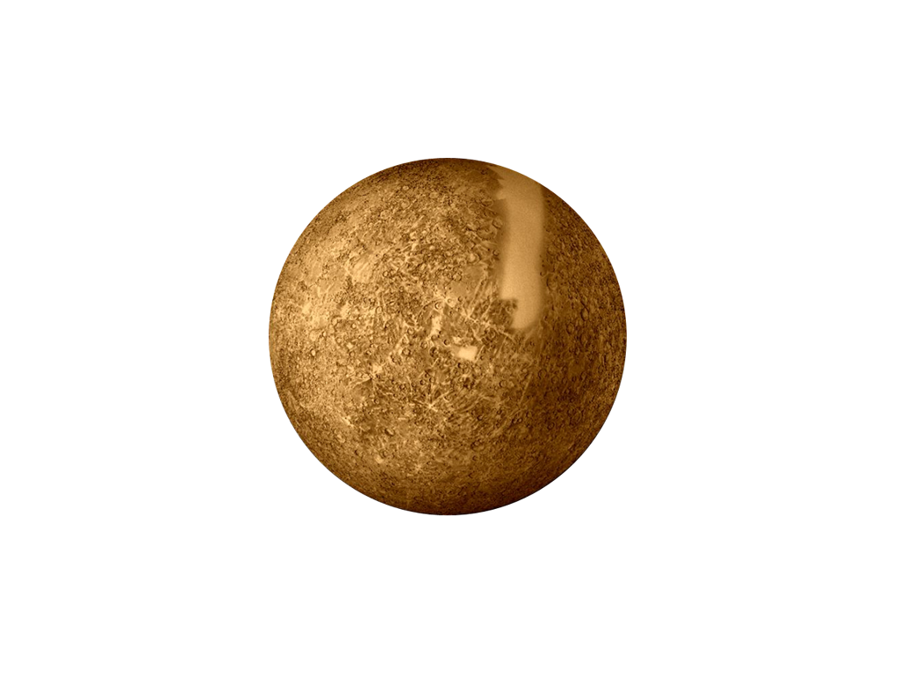
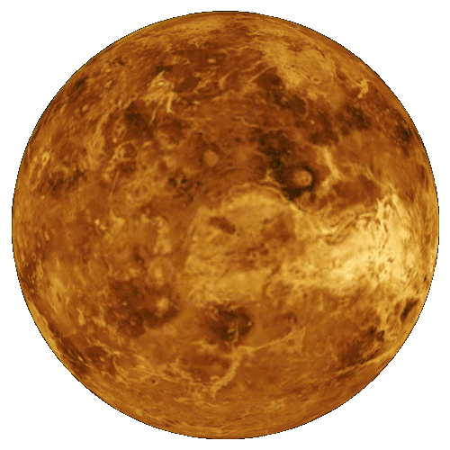
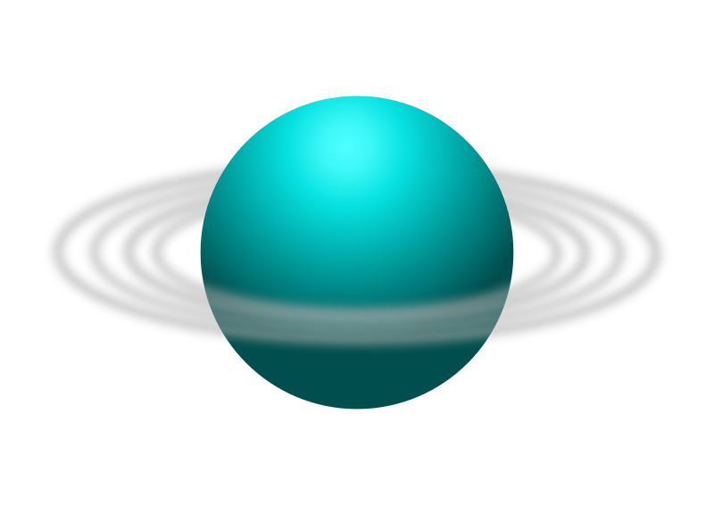

Mercurio
Mercúrio é o planeta mais próximo ao Sol e o oitavo em tamanho no sistema solar, sendo assim o
menor planeta. É basicamente constituído por ferro e pode ser visto da Terra a olho nu, mas sua proximidade do sol, dificulta a observação.

Vênus
Vênus é um planeta do sistema solar, localiza-se no segundo lugar a partir do sol. Vênus possui tamanho e massa semelhante a do planeta Terra, por isso os planetas citados eram considerados gêmeos, no entanto, as características parecidas se limitam à proporção corporal.

Terra
O planeta Terra é o planeta habitado por nós, seres vivos. Conhecido também como planeta água, é o maior dentre os
quatro planetas rochosos que fazem parte do Sistema Solar. Sendo o terceiro planeta mais proximo ao sol.

Marte
Marte é o quarto planeta a partir do Sol, o segundo menor do Sistema Solar. Batizado em homenagem a divindade romana da
guerra, muitas vezes é descrito como o "Planeta Vermelho", porque o óxido de ferro predominante em sua superfície lhe dá
uma aparência avermelhada.

Júpiter
Júpiter é o maior planeta do Sistema Solar, tanto em diâmetro quanto em massa, e é o quinto mais próximo do Sol. Sendo um gigante gasoso, onde não possui superficie solida.

Saturno
Saturno é o sexto planeta a partir do Sol e o segundo maior do Sistema Solar. Pertencente ao grupo dos
gigantes gasosos, sendo um planeta sem superficie solida e é bastante conhecido pelos seus famosos aneis que ficam em volta dele.

Urano
"O planeta Urano é o terceiro maior do sistema solar, formado principalmente por gases e fluidos, e também não possui uma superfície sólida como a Terra. Urano possui aneis também em sua volta mas muito finos e pouco visiveis.

Netuno
Netuno é o oitavo planeta do Sistema Solar a partir do Sol e o mais distante deste. Dispõe de coloração azulada e é
formado essencialmente por gases, como o metano. "ele temperaturas muito baixas, em torno de -200 °C.

Plutão
Por muitos anos, o Sistema Solar foi composto por nove planetas, dos quais Plutão fazia parte, ele deixou de ser um planeta e depois foi reclassificado como planeta anão porém muitas vezes ainda é representado como não fazendo parte do nosso sistema solar.